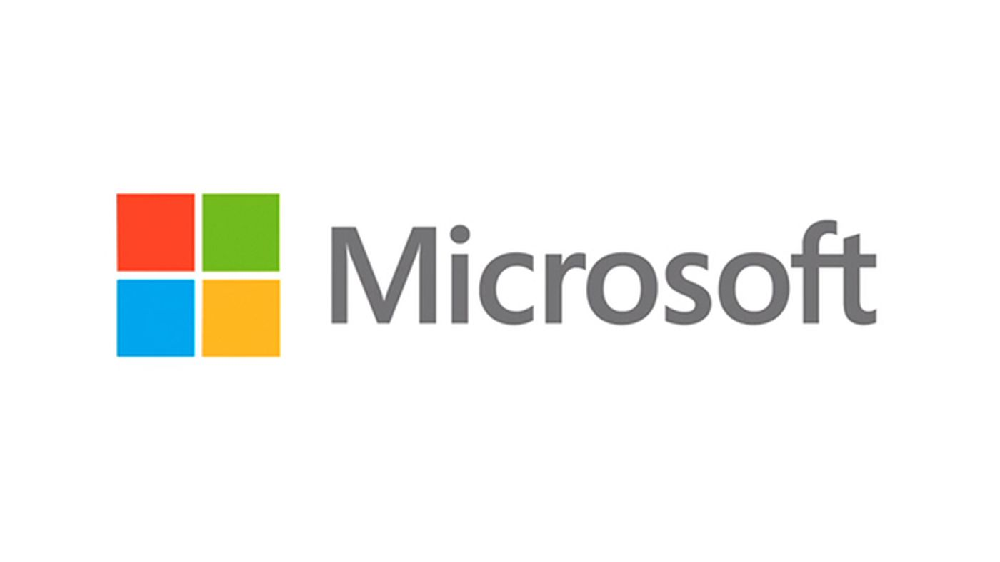

Sony Corporation (ソニー株式会社, Sonī kabushiki gaisha, /ˈsoʊni/ SOH-nee, commonly known as Sony and stylized as SONY) is a Japanese multinational conglomerate corporation headquartered in Kōnan, Minato, Tokyo.[7][1] The company operates as one of the world's largest manufacturers of consumer and professional electronic products, the largest video game console company, the second largest video game publisher, the second largest record company, as well as one of the most comprehensive media companies,[8][9] being the largest Japanese media conglomerate by size overtaking the privately held, family-owned Yomiuri Shimbun Holdings, the largest Japanese media conglomerate by revenue.
Sony, with its 50 percent market share in the image sensor market, is among the semiconductor sales leaders and, as of 2015, the fifth-largest television manufacturer in the world by annual sales figures. It is the world's largest player in the premium TV market, a market for a television of at least 55 inches with a price higher than $2,500.
Sony Corporation is the holding company of the Sony Group (ソニー・グループ, Sonī Gurūpu), which comprises Sony Electronics, Sony Semiconductor Solutions, Sony Pictures, Sony Music, Sony Interactive Entertainment, Sony Financial Holdings, and others.
The company's slogan is Be Moved. Their former slogans were The One and Only (1979–1982), It's a Sony (1982–2005), like.no.other (2005–2009) and make.believe (2009–2013).
Sony has a weak tie to the Sumitomo Mitsui Financial Group (SMFG) corporate group, the successor to the Mitsui group.[16] Sony is listed on the Tokyo Stock Exchange (in which it is a constituent of the Nikkei 225 and TOPIX Core30 indexes) with an additional listing in the form of American depositary receipts listed in the New York Stock Exchange (traded since 1970, making it the oldest Japanese company to be listed in an American exchange), and was ranked 122nd on the 2020 Fortune Global 500 list.

Microsoft Corporation is an American multinational technology company with headquarters in Redmond, Washington. It develops, manufactures, licenses, supports, and sells computer software, consumer electronics, personal computers, and related services. Its best known software products are the Microsoft Windows line of operating systems, the Microsoft Office suite, and the Internet Explorer and Edge web browsers. Its flagship hardware products are the Xbox video game consoles and the Microsoft Surface lineup of touchscreen personal computers. Microsoft ranked No. 21 in the 2020 Fortune 500 rankings of the largest United States corporations by total revenue; it was the world's largest software maker by revenue as of 2016. It is considered one of the Big Five companies in the U.S. information technology industry, along with Google, Apple, Amazon, and Facebook.
Microsoft (the word being a portmanteau of "microcomputer software") was founded by Bill Gates and Paul Allen on April 4, 1975, to develop and sell BASIC interpreters for the Altair 8800. It rose to dominate the personal computer operating system market with MS-DOS in the mid-1980s, followed by Microsoft Windows. The company's 1986 initial public offering (IPO), and subsequent rise in its share price, created three billionaires and an estimated 12,000 millionaires among Microsoft employees. Since the 1990s, it has increasingly diversified from the operating system market and has made a number of corporate acquisitions, their largest being the acquisition of LinkedIn for $26.2 billion in December 2016, followed by their acquisition of Skype Technologies for $8.5 billion in May 2011.
As of 2015, Microsoft is market-dominant in the IBM PC compatible operating system market and the office software suite market, although it has lost the majority of the overall operating system market to Android. The company also produces a wide range of other consumer and enterprise software for desktops, laptops, tabs, gadgets, and servers, including Internet search (with Bing), the digital services market (through MSN), mixed reality (HoloLens), cloud computing (Azure), and software development (Visual Studio).
Steve Ballmer replaced Gates as CEO in 2000, and later envisioned a "devices and services" strategy. This unfolded with Microsoft acquiring Danger Inc. in 2008, entering the personal computer production market for the first time in June 2012 with the launch of the Microsoft Surface line of tablet computers, and later forming Microsoft Mobile through the acquisition of Nokia's devices and services division. Since Satya Nadella took over as CEO in 2014, a move that helped the company's shares reach its highest value since December 1999.
Earlier dethroned by Apple in 2010, in 2018 Microsoft reclaimed its position as the most valuable publicly traded company in the world. In April 2019, Microsoft reached the trillion-dollar market cap, becoming the third U.S. public company to be valued at over $1 trillion after Apple and Amazon respectively.
Nintendo Co., Ltd.[b] is a Japanese multinational consumer electronics and video game company headquartered in Kyoto. The company was founded in 1889 as Nintendo Karuta[c] by craftsman Fusajiro Yamauchi and originally produced handmade hanafuda playing cards. After venturing into various lines of business during the 1960s and acquiring a legal status as a public company under the current company name, Nintendo distributed its first video game console, the Color TV-Game, in 1977. It gained international recognition with the release of the Nintendo Entertainment System in 1985.
Since then, Nintendo has produced some of the most successful consoles in the video game industry, such as the Game Boy, the Super Nintendo Entertainment System, the Nintendo DS, the Wii, and the Nintendo Switch. Nintendo has also released numerous influential franchises, including Mario, Donkey Kong, The Legend of Zelda, Kirby, Metroid, Fire Emblem, Animal Crossing, Splatoon, Star Fox, Super Smash Bros., and Pokémon.
Nintendo has multiple subsidiaries in Japan and abroad, in addition to business partners such as The Pokémon Company and HAL Laboratory. Both the company and its staff have received numerous awards for their achievements, including Emmy Awards for Technology & Engineering, Game Developers Choice Awards and British Academy Games Awards among others. Nintendo is one of the wealthiest and most valuable companies in the Japanese market.